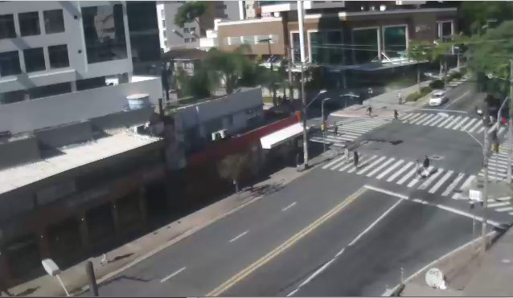
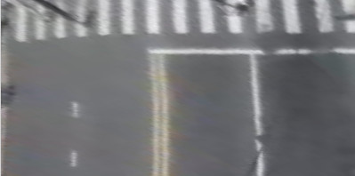
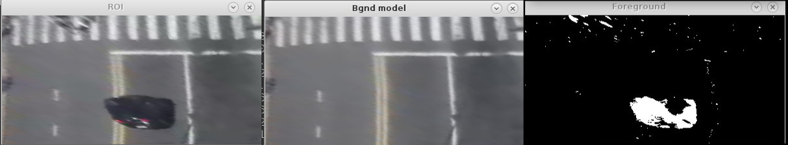
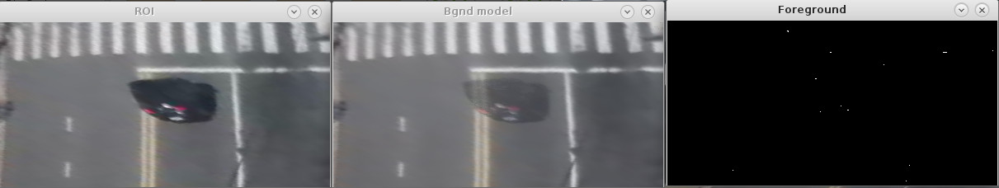
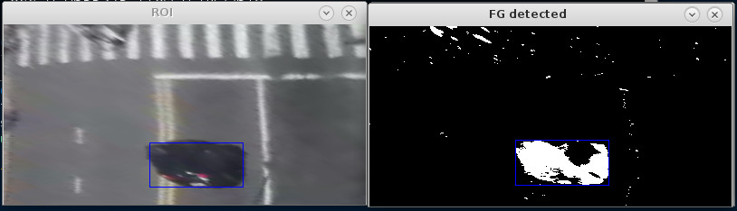
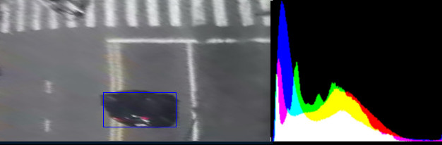
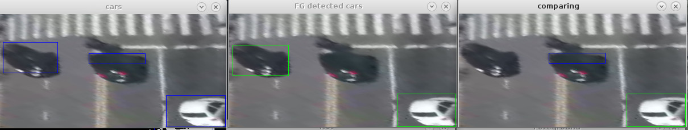

Modern society requires efficient traffic measurement and control.
Growing cities need car use statistics to plan infrastructure upgrades.
Efficient control can be achieved when using real time data.
A computer vision approach have lower installation costs and higher flexibility compared to induction loops.
Publicly available video streams make this solution attractive.
Objectives
Detect vehicles and obtain their position, area and velocity.
Obtain traffic parameters such as flow and occupancy for a given road.
The above mentioned measures allow an estimative of the lanes condition (busy, traffic jam, low traffic).
Problem Definition
Given a video stream it is necessary to find all vehicles in a frame. Next, to obtain the cars parameters such as position, area and velocity.
Propposed solution
1. Define and extract a Region of Interest (ROI)
A frame might have a wide view, we need to focus the road plane only.
Thus, we select a set of appropriate points and perform a perspective transform

Original frame
This image was obtained from a publicly available webcam at Osmar Cunha Street, Florianópolis centre.

ROI obtained using perspective transform
2. Detect cars
It is necessary to detect cars in the image in order to track and count them. How should this be done?
Using a classifier?
Or better, using a Background Subtraction method that does not need any previous information about the system.
2.a Detect moving regions
Background Subtraction (BS)
A background model is generated and a foreground mask is obtained by subtracting the original frame with the estimated background
The background model is updated at every frame, reducing the effect of illumination changes over time.
The model used in this case uses a Mixture of Gaussians (MOG) representation for each pixel, trying to represent the most often occuring values.
Careful adjustment of the BS object can give better results, however may be scene depedent.

Result obtained with Background Subtraction
2.b Background Subtraction (BS)
This method gives a great result and does not require training. However, it introduces another problem.
What happens when a car stay still for a long period of time?

To account for this problem, we will maintain a record of all detected cars and check if they are still in the scene using a descriptor described in later section.
3. Detect cars in foreground mask
Get contours of foreground mask
Get bounding boxes around each of them
Filter boxes by area to remove noise and false positives (area less than 1% of ROI)
Create a Car object containing the region dimensions, time of detection and feature extracted with a descriptor from the current frame
Store all detected cars in a fgCars vector.

Bounding box found around a valid region.
Descriptor
A descriptor tries to describe useful, discriminating, information about a set of data
It is necessary to indentify and distinguish the objects or data we are handling
It oftens convert a great amount of data into a significant discriminating amount of useful information

Example of color histogram feature extraction
Descriptor
In this project two descriptors were used:
Raw pixels of the corresponding car patch
Normalized color histogram of the corresponding car patch
Their performance will be compared later.
4. Car Update Process
We assume a vector of known cars in the scene, called cars, initially empty.
Because moving cars will be repeatedly detected, we need to check all fgCars against the cars vector, updating it if there's a match
Also, we need to check if cars that did not move are still in the scene, removing them from cars otherwise
Finally, we need to add the remaining fgCars that did find a match to the cars vector to account for new moving cars.
4.a Matching Process
A pair of cars is considered a match (correspond to the same car, but shifted in time) if the following conditions are met:
Distance between their centroids is smaller than a threshold $t_\text{dist}$
Ratio of their areas meets the condition $1-t_a \leq \frac{A_{c1}}{A_{c2}} \leq 1+t_a$ where $t_a$ is the area deviation threshold
Correlation calculated between their features is greater than a threshold $t_f$
4.a Matching Process
If there is a match, the following actions are executed:
Car position, feature and last detected time is updated
Car relative velocity is calculated using $v=\frac{d}{\Delta t}$
Corresponding car is removed from foreground detected cars to reduce complexity

Matching example, this comparisson failed
4.b Car Validation Process
Cars in the vector that did not get updated need validation, to make sure they are still present in the scene.
The descriptor is used to get a new feature from the patch of the current frame where the car was last found.
The correlation between this new extracted feature and the one previous recorded is computed.
The car is considered to still be in the scene if the correlation value is higher than a given threshold $t_\text{corr scene}$
If the above test fails, it is removed from the vector
4.c Car update process conclusion
By adopting all these measures, it is possible to know the position, area and relative velocity of any given car in an instant by inspection of the cars vector.
This approach also solves the problem of car "fading" introduced by the use of the background subtractor method.
5. Flow measures
In order to detect the state of a lane it is enough to know two measures:
Car flow $$F=\sum_i A_i v_i$$ where $A_i$, $v_i$ is the car area and velocity
A congested road will present very low flow with high occupation, while a busy but not congested road will present high figures for both values. A free road will present low flow and occupation.
Results
Descriptors Comparison
HSV Histogram
Grayscale Histogram
Image patch raw pixel values
Conclusions
HSV Histogram, even though only considers Hue and Saturation, is too sensitive to lightning conditions and camera color distortion.
Grayscale histogram gives a better result, proving itself resilient against changes in color, however does not discriminate car/non-car patches, so gives many false positives
The winner in this case is the raw patch pixel values, since it takes in account all channels and is resilient to color noise
Traffic parameters estimation
Conclusions
Detection fails sometimes, specially when the car color is similar to the background
Occlusion may cause two cars to be detected as one
The range of extracted parameters is clear enough to identify three distinct situations: congestion, busy road and free road.
Improvements
Car area matching could be enhanced to detect maximum vehicle area, thus improving the occupancy estimation.
Background subtraction parameters could analyzed in wider ranges